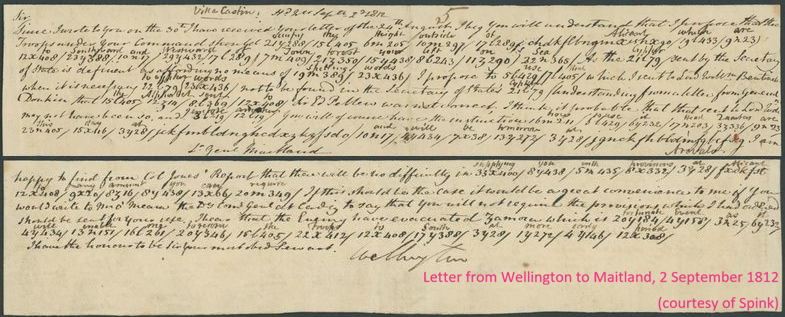
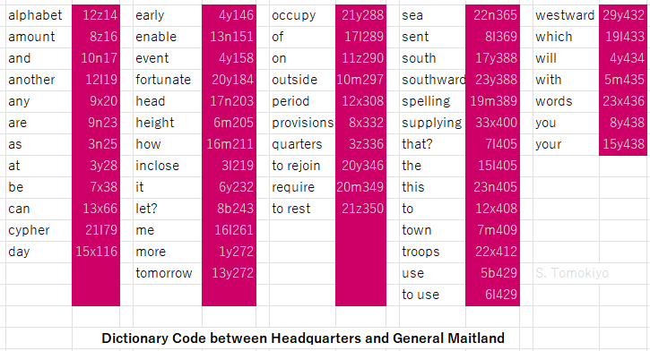
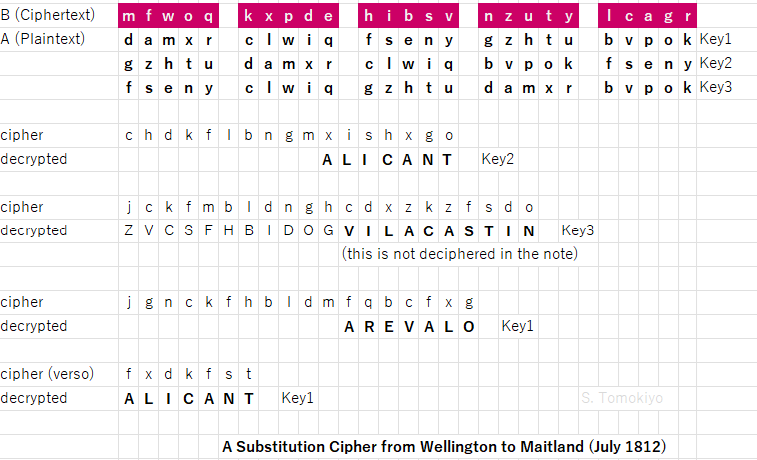

This article is inspired by an auction website, "26066 - Historical Documents, Autographs and Ephemera" (Spink, Lot 1184), which includes a partially encrypted letter from Wellington to General Maitland dated 2 September 1812 (accessed on 8 September 2026). The website already included an analysis of the letter by Patrick Hayes, an expert who works with the auction house, who expresses "special thanks to cryptanalyst George Lasry for providing his expertise". The reader will see that, before me, they had already established the full scheme of the dictionary code, associated it with Scovell based on what Urban writes about a similar scheme, identified what I call "Key 1" below for the substitution cipher, and also quoted relevant letters.
British codebreaking of Napoleonic ciphers (including great ciphers) by George Scovell during the Peninsular War is well-known by Mark Urban (2001), The Man Who Broke Napoleon's Codes (I use an edition from HarperCollins) (see another article).
On the other hand, the British army apparently was not much concerned about communication security until it started to invade deep into Spain in 1812 (ibid. p.252-253).
Arthur Wellesley, Lord Wellington (eventually promoted to duke), who had started campaigns from Portugal, soundly defeated the French at the Battle of Salamanca in July 1812, which led to liberation of Madrid. The next target was Burgos, further north and closer to the Biscayan coast. Since a need of closer cooperation between the army and the navy was expected, Commodore Popham (who prescribed naval communication in Telegraphic Signals or Marine Vocabulary) suggested use of a cipher. Rather surprisingly, Wellington did not feel the necessity, given that Scovell had established a communication system by Spanish messengers.
It was a different matter when it came to communications with the army in eastern Spain. Earlier in the year, Wellington requested Lord William Bentinck (Wikipedia) in Sicily to make a diversionary operation with his garrison. After much vacillation, General Thomas Maitland (Wikipedia, not to be confused with Frederick Maitland or Peregrine Maitland) landed near Barcelona with Spanish troops in July but, seeing nothing that could be done against Barcelona, sailed south to Alicante.
Wellington considered communications with the army in the east were worth protection by cipher.
According to Urban's interpretation of Wellington's dispatches from 29 August and 2 September 1812, "a diplomatic cipher had been sent out, but there had been problems initially with making sure both sides had the same table and later with words not contained in the tables (Urban (2001) p.253; what seem to be these letters put on an auction are further described below with my interpretation).
According to Urban, Scovell solved the problems by using the same edition of a pocket dictionary to encode a word in a format such as 134A18, which indicates the 18th word in the left column (A) on page 134 (Urban (2001) p.253, based on Scovell's remarks in his notebook containing a handwritten copy of Conradus' Cryptographia Denudata (see another article)).
An actual specimen of a letter employing a dictionary code is put on an auction "26066 - Historical Documents, Autographs and Ephemera" held on 23 September 2026 (Spink, Lot 1184). (I thank George Lasry for this information.) The beautiful leather binding of the papers bears the name "General Frederick Maitland" (though the career of Thomas Maitland above seems to match the context) (Patrick Hayes confirms that the name "Frederick" appears throughout the letters and his official military commissions. Frederick was a first cousin of Thomas. Frederick's father, Alexander Maitland, and Thomas's father, James Maitland, are sons of Charles Maitland, sixth Earls of Lauderdale.).
The volume titled in gilt "LETTERS FROM THE DUKE OF WELLINGTON / 1812-1846" is the one interesting in terms of cryptography.

A note from Wellington at the headquarters in Villa Castin (near Segovia) dated 2 September employs a dictionary code. For example, the word "use" is encoded as 5b429, in which "429" and "5" must indicate the page and line, respectively. The middle letter "b" may indicate the column but has a larger variety than naively expected.

Words/names not in the dictionary are enciphered letter by letter by using a polyalphabetic cipher. The key is provided by two sets of five strips of paper. The wrapper of the ten strips is endorsed "a cypher recd from Lord Wellington / July 1812".
The twenty-five letters of the alphabet (there is no "j") are written on each set of five strips, each with five letters. The set A is for plaintext and the set B is for ciphertext. By rearranging the five pieces, there can be 5!=120 substitution patterns. In the letter from 2 September 1812, I identified two more keys in addition to "Key 1" already identifed by the auction house.

As can be seen, more than half of ciphertext is nulls. Considering there seems to be no gap in the contemporary deciphering, these are indeed nulls (rather than they need to be deciphered with some other permutation of the key).
The indication of these nulls as well as the indication of the permutation of the five strips remain to be discovered.
(As an aside, one ciphertext sequence on the last line on the front page remains undeciphered. "Genl Maitland" written below is not the decryption. Since there are only 120 possible patterns, I thought of solving it myself by trying every possibility with a Perl script, but I had a second thought. When I asked Gemini AI to do it, it successfully came up with a solution "Vila Castin". At first, it gave a wrong key (with the right decryption), but when I pointed it out, it provided the correct key, with an explanation that it confirmed the key with a Perl script. The decrypted context ("Headquarters are this day at Vila Castin and will be tomorrow[?] at Arevalo") matches the place of despatch "Villa Castin".)
Wellington had given notice of an upcoming cipher in a despatch to Maitland a few days before.
Wellington provided the above polyalphabetic cipher in July, but a fuller code was being delivered from England. But (perhaps with the advice of Scovell) Wellington found that the code did not provide for enciphering words/names not in the dictionary, and hence proposed, in his letter of 2 September, using the polyalphabetic cipher distributed in July.
The above letters from 29 August and 2 September do not seem to indicate the dictionary code was devised to address the deficiency of the code provided by the home ministry. Scovell's notes on Conradus (see above) leave no doubt that he knew dictionary code, but do not establish the authorship of the dictionary code actually used (unless the despatches Urban used were something different from the above).
Regarding the polyalphabetic cipher, Wellington says that, learning that it was not correct by a report from Pellew (commanding the Mediterranean fleet (Wikipedia)), he enclosed a new copy in his letter to Maitland. But the strips dated July 1812 appear to decipher the 2 September despatch correctly. Probably, the copy sent to Bentinck had no problems as Pellew's (or Maitland replaced the content but kept the wrapper).